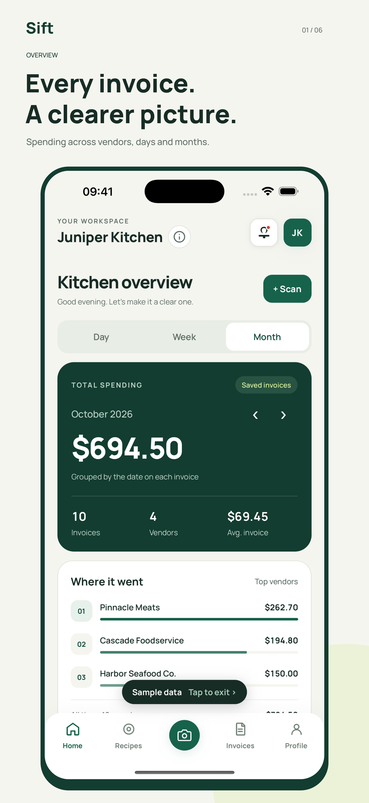
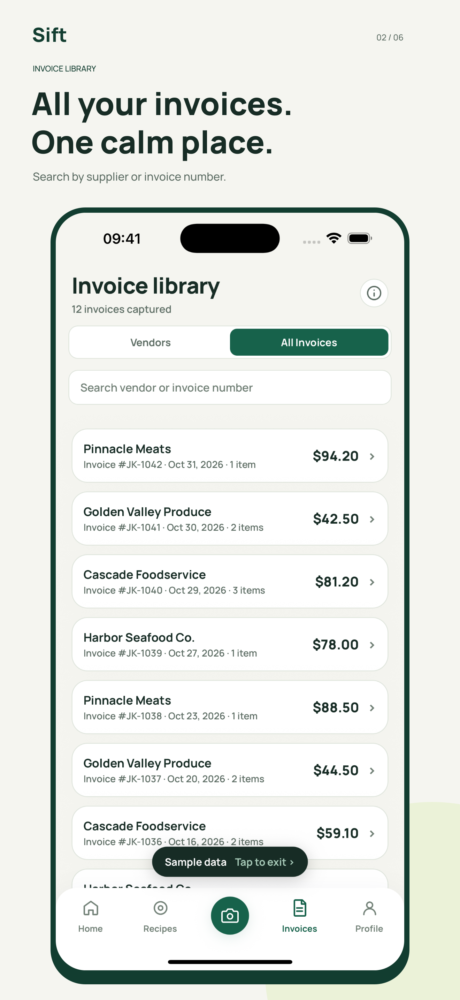
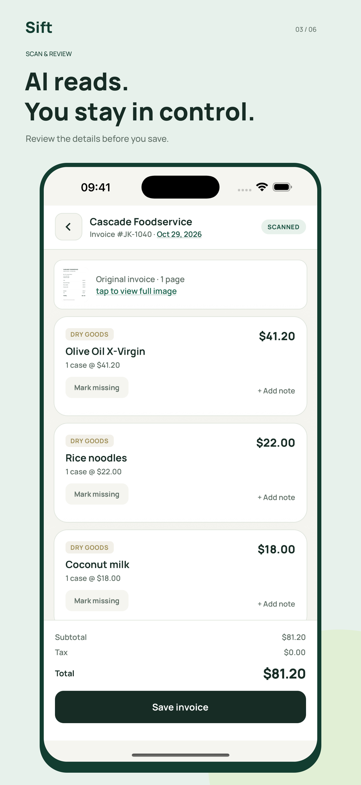
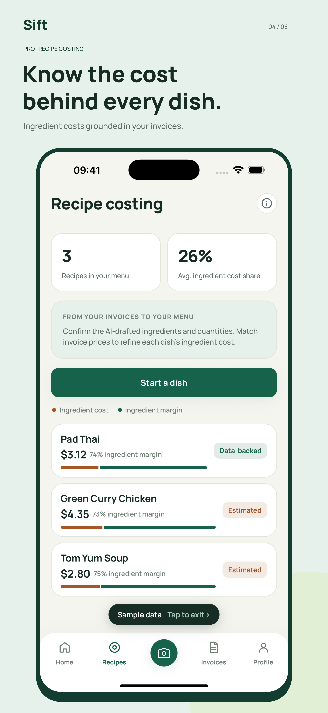
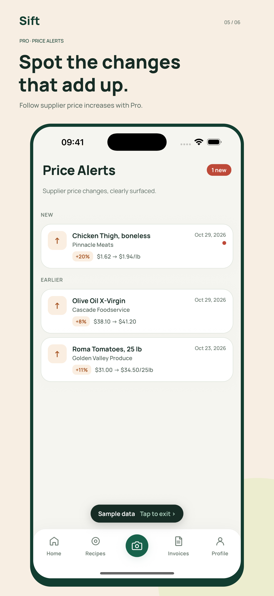
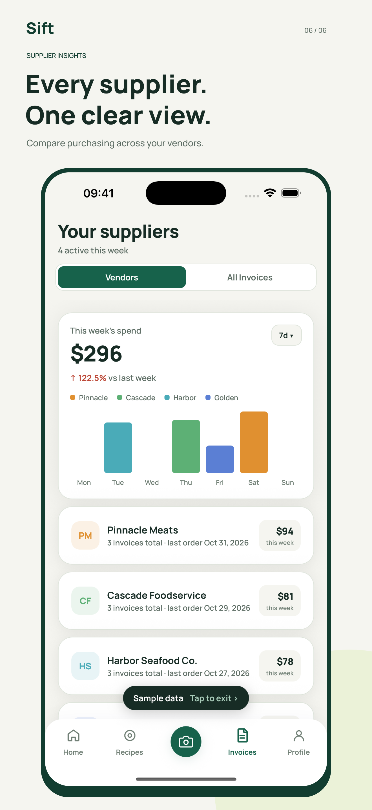
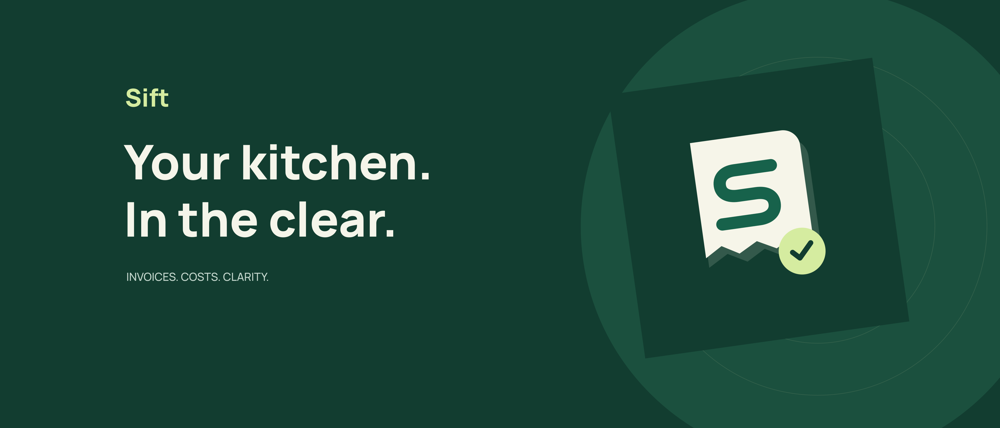
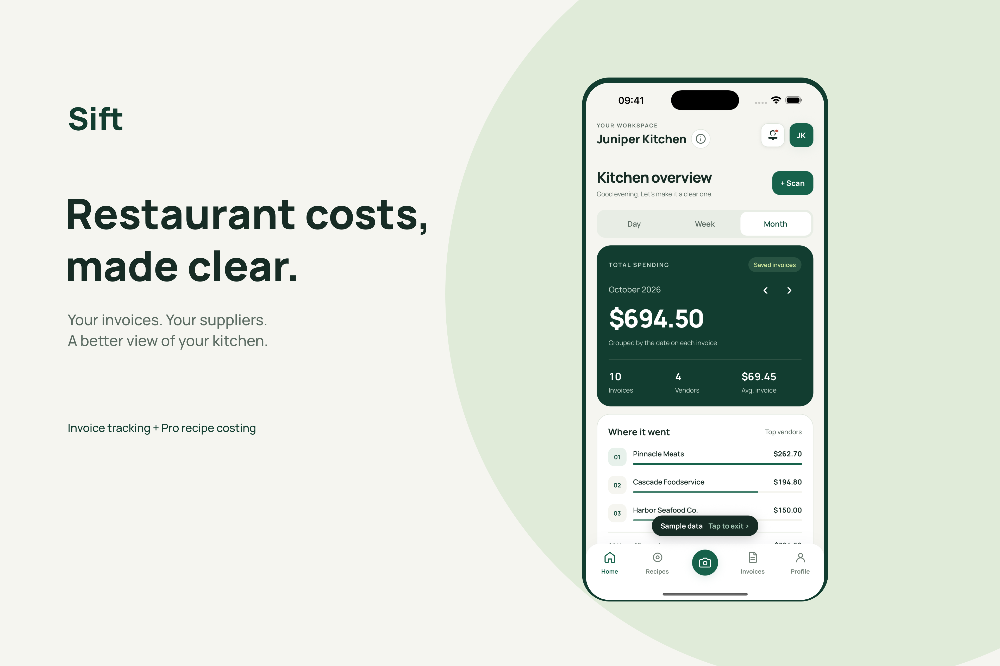
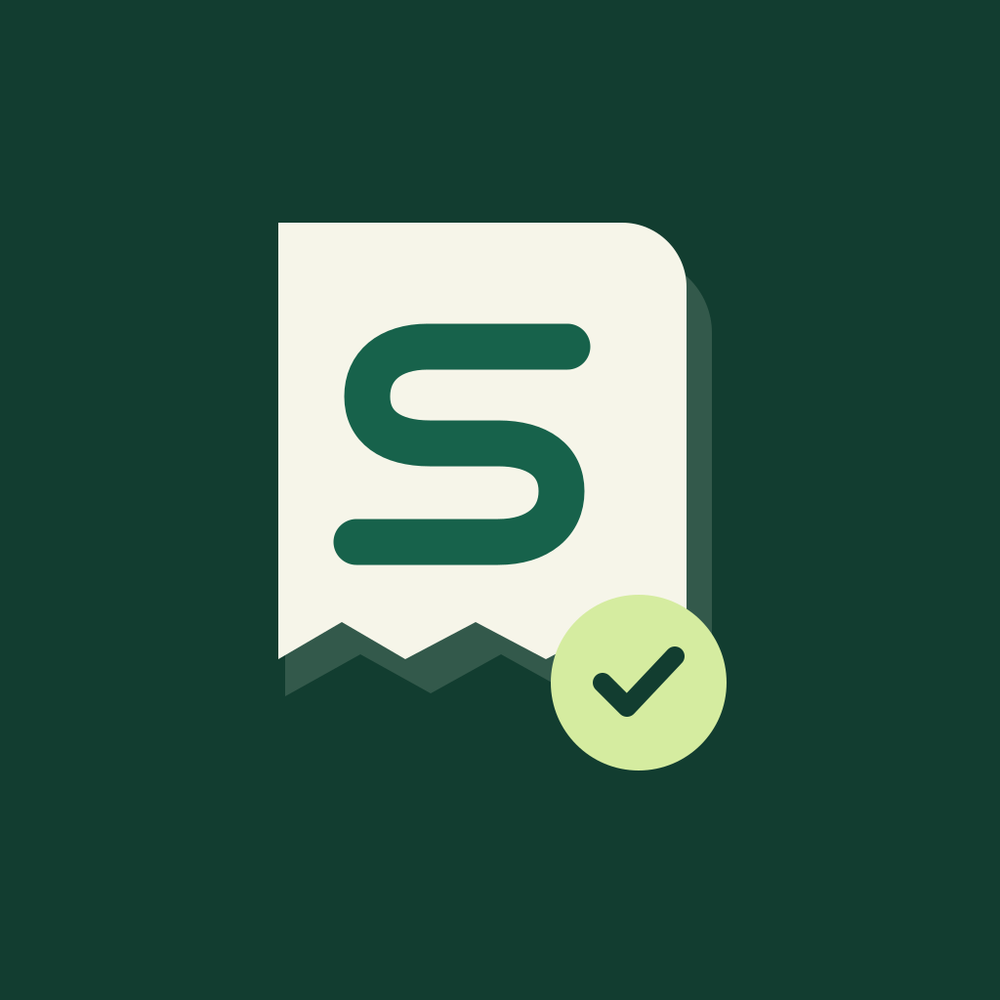

App Store artwork and actual iPhone captures. Fictional sample restaurant data. Pro features are labeled.









Sources and requirements: README. Raw app captures are preserved in screenshots/raw.